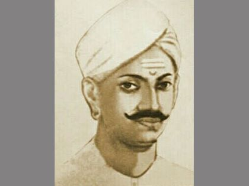
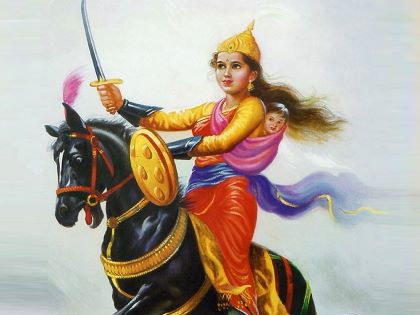
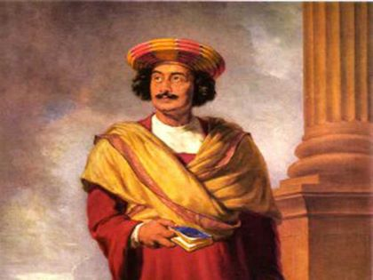
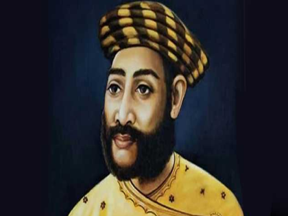
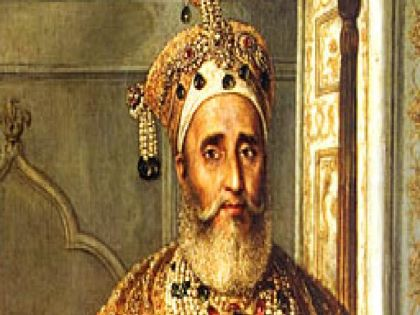
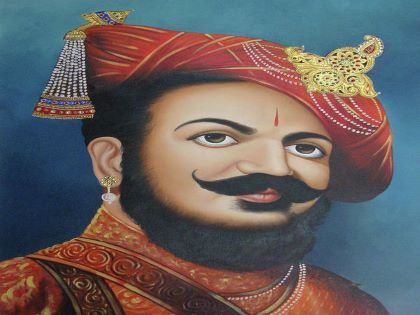
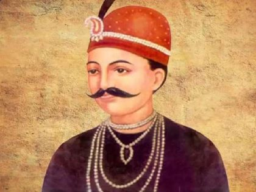
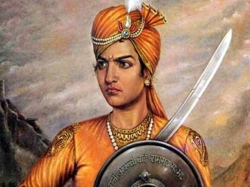
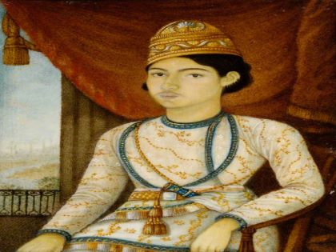
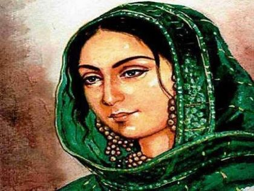

Social Reformer & Freedom Fighter
Mangal Pandey

Information
Date of Birth - 19 July 1827
Place of Birth - Nagwa(Uttar Pradesh)
Date of Death - 9 April 1857
Reason for death - Mangal Pandey, was hanged to death for attacking his officers in Barrackpore.
Rani Laxm Bai

Information
Date of Birth - 19 November 1828
Place of Birth - Varanasi
Date of Death - 18 June 1858
Reason for death - She was later killed in Combat after having successfully assaulted Gwalior.
Raja Ram Mohan Roy

Information
Date of Birth - 22 May 1772
Place of Birth - Radhnagar Khanakul
Date of Death - 27 September 1833
Reason for death - In the Grounds of Stapleton Grove where he had died of meningitis on 27 September 1833.
Kunwar Singh

Information
Date of Birth - 13 November 1777
Place of Birth - JagdishPur
Date of Death - 26 April 1858
Reason for death - Kunwar Singh died due to injuries.
Bahadur Shah Zafar

Information
Date of Birth - 24 October 1775
Place of Birth - Shahjahanabad
Date of Death - 7 November 1862
Reason for Death - In 1862, at the age of 87, he had reportedly acquired some illness.
Nana Saheb

Information
Date of Birth - 19 May 1824
Place of Birth - Bithoor
Date of Death - 24 September 1859
Reason for Death - Sahib was reported to have fallen to malarious fever.
.
Tatya Tope

Information
Date of Birth - 16 February 1814
Place of Birth - Shivpuri
Date of Death - 18 April 1859
Reason for Death - Tatya Tope, was hanged to death on April 18, 1859 at Shivpuri, Madhya Pradesh.
Rani Avanti Bai

Information
Date of Birth - 16 August 1831
Place of Birth - Dindori
Date of Death - 20 March 1858
Reason for Death - Surrounded by British
troops and facing the prospect of capture, Avanti Bai chose to sacrifice her life rather than to surrender to the enemy.
Birjis Qadr

Information
Date of Birth - 20 August 1845
Place of Birth - Qaisar Bagh
Date of Death - 14 August 1893
Reason for Death - Birjis Qadr along with his son and other confidantes were poisoned to death.
Begum Hazrat Mahal

Information
Date of Birth - 1820
Place of Birth - Faizabad
Date of Death - 7 April 1879
Reason for Death - Begum Hazrat Mahal sought asylum in Nepal, where she died on 7 April, 1879.